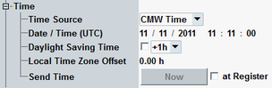

The "Time" section allows you to send configurable date and time information to the UE. Thus you can update the date and time displayed by the mobile. In a real network, this service is typically used to send the current local time to the UE.
The section is not relevant for reduced signaling. It is only visible if R&S CMW-KS410 is available.

- "CMW Time"
Selects the current CMW (Windows) date and time as source. The Windows settings determine the UTC date, the UTC time, the current daylight saving time offset and the time zone offset. - "Date / Time"
Selects the parameters "Date / Time (UTC)" and "Daylight Saving Time" as source. The time zone offset is set to 0.
Option R&S CMW-KS410 is required.
Remote command:Defines the UTC date and time to be used if "Time Source" is set to "Date / Time".
Option R&S CMW-KS410 is required.
Remote command:Specifies a daylight saving time (DST) offset to be used if "Time Source" is set to "Date / Time".
You can disable DST or enable it with an offset of +1 hour or +2 hours.
Option R&S CMW-KS410 is required.
Remote command:Defines the time zone offset to be used if "Time Source" is set to "Date / Time".
Option R&S CMW-KS410 is required.
Remote command:Press "Now" to send the date and time information to the UE.
"at Register" selects whether the date and time information is sent to the UE during the registration and attach procedures or not.
Option R&S CMW-KS410 is required.
Remote command: